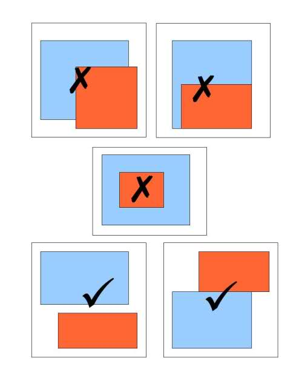

Created: 2022-04-20 Wed 22:33
An index is just a data structure that makes the searching faster for a specific column in a database.
It takes up space, and the bigger your table is, the bigger your index will be. Another performance hit with indexes is that you must do the same actions on your index whenever you add, delete, or update entries in the corresponding table. Keep in mind that an index must include the same up-to-date data as whatever is in the table column covered by the index.
A hash index, inverts the relationship between a primary key and a value in the table.
Balanced tree, not binary tree.
< / > operators.Official docs: https://www.postgresql.org/docs/current/btree-intro.html
Good explainer: https://rahulreddyr3.medium.com/indexing-in-postgresql-b-tree-4377bd72d7e5
| pk | menu item |
|---|---|
| 1 | chicken burger |
| 2 | chickpea burger |
| val | pk |
|---|---|
| chicken | 1 |
| chickpea | 2 |
| burger | [1, 2] |
<@@>=&&Good for when a value of a row can overlap with the same column in another row. Think polygons on a map, or to return only rows where the polygon contains a point.
GiST indexes can also be used on text columns for full text search similar to GINs but there are some fixed size constrains for GiST indexes.
Further reading: https://medium.com/postgres-professional/indexes-in-postgresql-5-gist-86e19781b5db

The name implies that this index type is similar to GiST, which is true but this works better for data where the values can be highly clustered like post codes or IP addresses.
Example: A database table storing logins
Rows will be represented as a namedtuple.
from collections import namedtuple Login = namedtuple('Login', ['email', 'date', 'user_agent', 'ip'])
Tables will be represented as a Python list
[ Login( email='ostafford@example.org', date=datetime.date(2010, 4, 13), user_agent='Mozilla/5.0 (X11; Linux x86_64) AppleWebKit/531.0 (KHTML, like Gecko) Chrome/54.0.869.0 Safari/531.0', ip='44.14.199.207' ), Login( email='joe@example.com', date=datetime.date(2013, 4, 13), user_agent='Mozilla/5.0 (X11; Linux x86_64) AppleWebKit/531.0 (KHTML, like Gecko) Chrome/94.0.822.0 Safari/541.0', ip='22.12.189.17' ) ]
CREATE TABLE IF NOT EXISTS logins ( id serial primary key, email VARCHAR(100) unique not null, date timestamp not null default NOW(), user_agent VARCHAR(1000) not null, ip inet not null );
from pprint import pprint import faker import random fake = faker.Faker() def make_row(): return Login( fake.unique.email(), fake.date_object(), fake.chrome(), fake.ipv4_public() ) table = [make_row() for _ in range(10000)] random_login = random.choice(table) last_login = table[-1] pprint(last_login)
Login(email='mileskathryn@example.net', date=datetime.date(1984, 10, 9), user_agent='Mozilla/5.0 (iPad; CPU iPad OS 10_3_4 like Mac OS X) AppleWebKit/531.0 (KHTML, like Gecko) CriOS/44.0.812.0 Mobile/15W897 Safari/531.0', ip='115.60.254.20')
from timeit import timeit def find_by_email(t, email): for x in t: if x.email == email: return x
timeit( 'find_by_email(table, last_login.email)', globals=globals(), number=10000 )
4.3596248630055925
h_i = {login.email: i for i, login in enumerate(table)} def find_by_email_with_hash_index(t, email, hash_index): return table[hash_index[email]] # peek at the index pprint(dict(list(h_i.items())[:3]))
{'jasonhopkins@example.org': 0,
'jesus63@example.com': 2,
'shannonherman@example.org': 1}
timeit( 'find_by_email_with_hash_index(table, last_login.email, h_i)', globals=globals(), number=10000 )
0.0023106759908841923